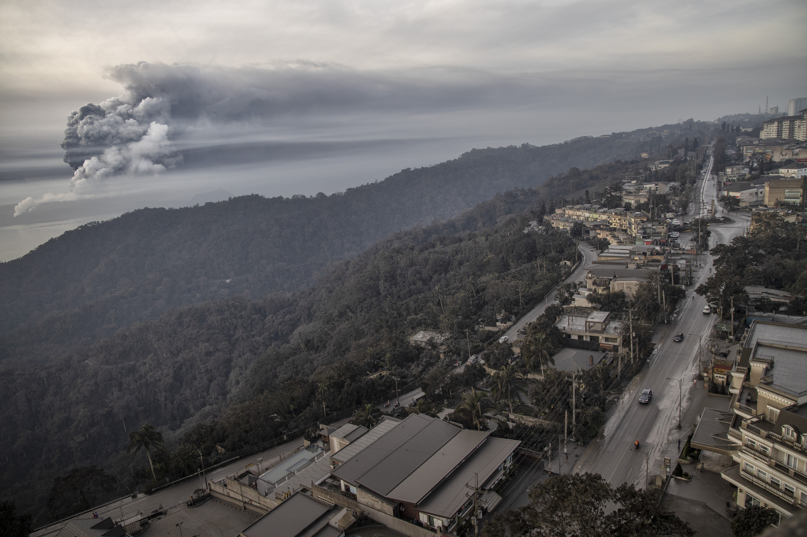
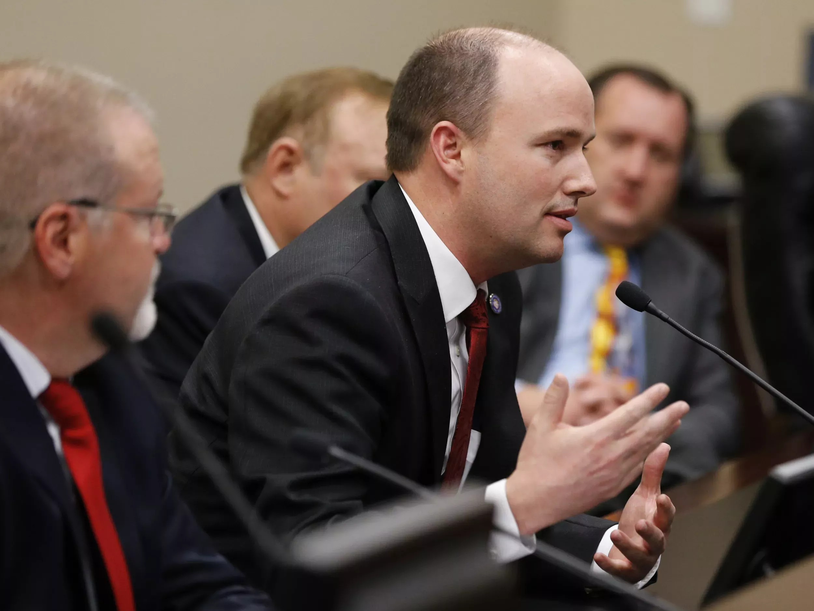

More Stories
A majority of respondents to the ABC/Ipsos survey also believed Trump's actions have made the U.S. less safe.
A spokesperson for the princes said a story about the relationship between the brothers is "false."

The alert level has been raised to four out of five, after lava gushed out the volcano amid warnings that there could be an eruption at any time.
Esper appeared to contradict the president on Sunday, when he said he had not seen evidence that Iran was planning attacks on four American embassies.
The Vermont senator said Warren is a "very good friend" of his and insisted the two will "continue to work together."
She said the House could file new articles of impeachment against the president, but expressed confidence in the case she plans to send over to the Senate this week.
The GOP senator said Nancy Pelosi "gave in" to Mitch McConnell, and that the "dangerous" Senate impeachment trial will end in days, not weeks.
Michael McCain said the 176 people killed aboard Ukraine International Airlines Flight 752 were "collateral damage" of Trump's "irresponsible" behavior.

"To compare the brutal enslavement of Black Americans to a woman's constitutionally protected right is offensive," said Utah Rep. Sandra Hollins.
"They are lying that our enemy is America," protesters chanted.
Using the hashtag on Twitter, supporters of the Vermont senator encouraged donors to the Massachusetts senator to request refunds via ActBlue over the dispute.
Iran admitted over the weekend that it had accidentally shot down a Ukrainian jetliner with dozens of Canadians on board.
"It is unconscionable that an American president would mock Islam and Muslims in such a derogatory manner," a spokesperson for the Council on American-Islamic Relations told Newsweek.
The monarch issued the statement following "very constructive" talks with Harry, Prince William and Prince Charles at her Sandringham estate in Norfolk, U.K.
The Vermont senator also said any Supreme Court nominee would have to be "100 percent" in favor of the Roe v. Wade decision.
The 2020 Oscar nominations have been released and Twitter called out some of the Academy's oversights of women and people of color.
A book co-written by the retired pontiff says it is not possible to be married and be a priest "simultaneously."

Health
This season, medics have been struck by the predominance of a different strain of flu that can be particularly damaging to children—influenza B.